Case study 1:
Hydrographical dynamics in the Baltic Sea
SOLUTION SCRIPT

Foto: ISS Crew Earth Observations Facility and the Earth Science and Remote Sensing Unit, Johnson Space Center (under CC0)
Your task
This case study is meant to repeat all single steps you learnt in the previous lectures and to summarize them into one analysis as you would do also with a real analysis. Some of the tidying and data quality check steps you probably will have done already with the previous exercises → then simply put them together in your RMarkdown file, this time adding a bit more text on why you did what.
1: Importing and tidying the data
1.1 Import
# Load relevant libraries
library(tidyverse)
library(lubridate)
# Set your working directory if you haven't before (should be the same than
# for the R Markdown file) and import the data
hydro <- read_csv("data/1111473b.csv") # I have the data in a subfolder called 'data'
dim(hydro)## [1] 30012 11names(hydro)## [1] "Cruise" "Station"
## [3] "Type" "yyyy-mm-ddThh:mm"
## [5] "Latitude [degrees_north]" "Longitude [degrees_east]"
## [7] "Bot. Depth [m]" "PRES [db]"
## [9] "TEMP [deg C]" "PSAL [psu]"
## [11] "DOXY [ml/l]"The names of the 11 columns are pretty long and include white space and special characters. Assigning new names that are shorter and simpler are highly recommended (decide latest here which naming convention you want to follow and then stick to it):
- lower case, upper case (not recommended) or camel case?
- underscore or point for separating words?
→ Examples: data_time / date.time / dateTime / DateTime
names(hydro) <- c("cruise", "station", "type", "date_time", "lat", "long",
"depth", "pres", "temp", "sal", "doxy")Check if the parsed formats for the variables are correct:
glimpse(hydro) # function from the tibble package, similar to str(hydro)## Observations: 30,012
## Variables: 11
## $ cruise <chr> "????", "????", "????", "????", "????", "????", "???...
## $ station <chr> "0247", "0247", "0247", "0247", "0247", "0247", "024...
## $ type <chr> "B", "B", "B", "B", "B", "B", "B", "B", "B", "B", "B...
## $ date_time <dttm> 2015-02-17 09:54:00, 2015-02-17 09:54:00, 2015-02-1...
## $ lat <dbl> 55.00, 55.00, 55.00, 55.00, 55.00, 55.00, 55.00, 55....
## $ long <dbl> 13.3000, 13.3000, 13.3000, 13.3000, 13.3000, 13.3000...
## $ depth <chr> "0048", "0048", "0048", "0048", "0048", "0048", "004...
## $ pres <dbl> 0.2, 1.0, 5.0, 10.0, 15.0, 20.0, 25.0, 30.0, 35.0, 4...
## $ temp <dbl> 3.57, 3.57, 3.56, 3.56, 3.55, 3.55, 3.56, 3.57, 3.60...
## $ sal <dbl> 9.029, 9.006, 9.008, 9.053, 9.055, 9.111, 9.108, 9.1...
## $ doxy <dbl> 6.76, 6.71, 6.47, 6.17, 6.03, 6.03, 6.08, 6.03, 5.98...Most columns seem to be parsed correctly:
- the metadata
cruise,station, andtypewere parsed as character vectors - the date and time column was parsed as dttm, which includes both data and time
- the coordinates as well as all measurement variables (
pres,temp,sal, anddoxy) were imported as double vectors - BUT, you’ll notice that the column
depth, representing the bottom depth at that station, was parsed as character vector. But as the original column name “Bot.depth [m]” implies, it represents a numeric variable
unique(hydro$depth)## [1] "0048" "0089" "0047" NA "0011" "0016" "0029" "0045" "0046" "0040"
## [11] "0044" "0060" "0070" "0092" "0091" "0095" "0014" "0022" "0030" "0041"
## [21] "0031" "0069" "0094" "0090" "0028" "0013" "0032" "0064" "0051" "0063"
## [31] "0056" "0055" "0061" "0058" "0054" "0053" "0024" "0049" "0074" "0129"
## [41] "0103" "0110" "0096" "0062" "0038" "0042" "0083" "0113" "0118" "0087"
## [51] "0085" "0088" "0084" "0072" "0099" "0079" "0081" "0102" "0086" "0068"
## [61] "0067" "0052" "0059" "0075" "0057" "0066" "0043" "0035" "0082" "0076"
## [71] "0093" "0071" "0080" "0077" "0078" "0105" "0021" "0023" "0073" "0050"
## [81] "0117" "0136" "0130" "0152" "0155" "0149" "0168" "0160" "0153" "0133"
## [91] "0106" "0147" "0065" "0132" "0116" "0100" "0104" "0108" "0037" "0097"
## [101] "0114" "0111" "0185" "0101" "0127" "0143" "0126" "0033" "0027" "0036"
## [111] "0018" "0039" "0034" "0019" "0002" "0010" "0008" "0006" "0015" "0026"
## [121] "0004" "0017" "0025" "0003" "0009" "0007" "0012" "0176" "0445" "0202"
## [131] "0144" "0240" "0198" "0150" "0162" "0120" "0195" "0238" "0449" "0287"
## [141] "0134" "0219" "0107" "0173" "0196" "0123" "0131" "0182" "0172" "0175"
## [151] "0122" "0140" "0109" "0142" "0203" "0158" "0194" "0239" "0145" "0224"
## [161] "0205" "0201" "0098" "0119" "0218" "0112" "0124" "0125" "0286" "0181"
## [171] "0210" "0179" "0215" "0138" "0192" "0164" "0171" "0193" "0141" "0204"
## [181] "0331" "0200" "0121" "0228" "0242" "0230" "0197" "0161" "0166" "0191"
## [191] "0169" "0170" "0163" "0180" "0285" "0221" "0020" "0199" "0165" "0435"
## [201] "0443" "0005" "0154" "0222" "0128" "0151" "0460" "0455" "0462" "0451"
## [211] "0459" "0466"The depth values do not contain any special character, white space, etc. but are probably parsed as character as they all contain 1 or 2 zeros as first digits. You can use 2 options to convert this charcter column into an integer column:
#hydro$depth <- as.integer(hydro$depth) # base function
hydro$depth <- parse_integer(hydro$depth) # from the readr package
# Quick test whether conversion worked
typeof(hydro$depth)## [1] "integer"Now we add the month and day, which we simply extract from the date_time column using the lubridate package. Sometimes it is useful to have particularly the month as categorical variable so we will add a 2nd month column (fmonth), which will be the factorized months:
# Basic way of adding a variable to an existing data frame
hydro$month <- month(hydro$date_time)
hydro$day <- day(hydro$date_time)
# Convert month into a factor and save it under a different name (now using the tidy way)
hydro <- hydro %>% mutate(fmonth = factor(month, levels = 1:12,
labels = c("Jan","Feb","Mar","April","May","Jun","Jul","Aug","Sep","Oct","Nov","Dec")))1.2 Tidy data
1.2.1 Data structure
You can see in the table below that the dataset is already quite tidy with one measurement per row (i.e. one sample per depth level at a specific station) and the measured parameter (temp, sal, etc.) per column in addition to the sample information (in terms of the station and measured depth):
- Row 1 - 12 are all measurements taken by the unnamed cruise ???? at station 0247, located at 55.00°N and 13.30°E, where bottom depth is 48m. Measurements were taken here at different depth intervals from 0.2m to 46m depth (see
pres) on February 17th, 9:54 a.m.
Typically, we are interested in each measured parameter alone so there is no need to gather the data more (i.e. make an even longer table by stacking the measured parameters).
For now, uniting or separating certain columns is also not necessary.
| cruise | station | type | date_time | lat | long | depth | pres | temp | sal | doxy | month | day | fmonth |
|---|---|---|---|---|---|---|---|---|---|---|---|---|---|
| ???? | 0247 | B | 2015-02-17 09:54:00 | 55.00 | 13.3000 | 48 | 0.2 | 3.57 | 9.029 | 6.76 | 2 | 17 | Feb |
| ???? | 0247 | B | 2015-02-17 09:54:00 | 55.00 | 13.3000 | 48 | 1.0 | 3.57 | 9.006 | 6.71 | 2 | 17 | Feb |
| ???? | 0247 | B | 2015-02-17 09:54:00 | 55.00 | 13.3000 | 48 | 5.0 | 3.56 | 9.008 | 6.47 | 2 | 17 | Feb |
| ???? | 0247 | B | 2015-02-17 09:54:00 | 55.00 | 13.3000 | 48 | 10.0 | 3.56 | 9.053 | 6.17 | 2 | 17 | Feb |
| ???? | 0247 | B | 2015-02-17 09:54:00 | 55.00 | 13.3000 | 48 | 15.0 | 3.55 | 9.055 | 6.03 | 2 | 17 | Feb |
| ???? | 0247 | B | 2015-02-17 09:54:00 | 55.00 | 13.3000 | 48 | 20.0 | 3.55 | 9.111 | 6.03 | 2 | 17 | Feb |
| ???? | 0247 | B | 2015-02-17 09:54:00 | 55.00 | 13.3000 | 48 | 25.0 | 3.56 | 9.108 | 6.08 | 2 | 17 | Feb |
| ???? | 0247 | B | 2015-02-17 09:54:00 | 55.00 | 13.3000 | 48 | 30.0 | 3.57 | 9.150 | 6.03 | 2 | 17 | Feb |
| ???? | 0247 | B | 2015-02-17 09:54:00 | 55.00 | 13.3000 | 48 | 35.0 | 3.60 | 9.210 | 5.98 | 2 | 17 | Feb |
| ???? | 0247 | B | 2015-02-17 09:54:00 | 55.00 | 13.3000 | 48 | 40.0 | 3.79 | 9.490 | 6.03 | 2 | 17 | Feb |
| ???? | 0247 | B | 2015-02-17 09:54:00 | 55.00 | 13.3000 | 48 | 45.0 | 4.24 | 12.094 | 5.68 | 2 | 17 | Feb |
| ???? | 0247 | B | 2015-02-17 09:54:00 | 55.00 | 13.3000 | 48 | 46.0 | 5.06 | 17.973 | 5.10 | 2 | 17 | Feb |
| ???? | 0793 | B | 2015-06-12 08:15:00 | 55.25 | 15.9833 | 89 | 0.8 | 12.83 | 7.630 | 5.29 | 6 | 12 | Jun |
| ???? | 0793 | B | 2015-06-12 08:15:00 | 55.25 | 15.9833 | 89 | 1.0 | 12.83 | 7.622 | 5.29 | 6 | 12 | Jun |
1.2.2 Missing values
First, we need to check whether the dataset contains any NAs, and if so how many. The function any() is useful here as we can see whether at least one of the values in the logical vector is true:
any(is.na(hydro))## [1] TRUELets see how many NAs we have:
sum(is.na(hydro))## [1] 13809We can see that 13809 out of 330132 cells (30012 rows x 11 columns) contain NAs. To quickly see which column contains most NAs, use the summary() function:
summary(hydro)## cruise station type
## Length:30012 Length:30012 Length:30012
## Class :character Class :character Class :character
## Mode :character Mode :character Mode :character
##
##
##
##
## date_time lat long
## Min. :2015-01-08 03:10:00 Min. :53.67 Min. :13.03
## 1st Qu.:2015-03-24 05:00:00 1st Qu.:55.23 1st Qu.:16.02
## Median :2015-07-11 03:32:00 Median :56.63 Median :19.04
## Mean :2015-07-01 11:52:28 Mean :57.45 Mean :18.92
## 3rd Qu.:2015-09-24 06:25:00 3rd Qu.:59.48 3rd Qu.:20.63
## Max. :2015-12-17 09:00:00 Max. :65.91 Max. :28.71
##
## depth pres temp sal
## Min. : 2.00 Min. : 0.00 Min. :-0.700 Min. : 0.065
## 1st Qu.: 56.00 1st Qu.: 10.00 1st Qu.: 4.200 1st Qu.: 6.548
## Median : 82.00 Median : 30.00 Median : 6.067 Median : 7.430
## Mean : 93.91 Mean : 38.09 Mean : 7.668 Mean : 8.082
## 3rd Qu.:108.00 3rd Qu.: 55.00 3rd Qu.:10.500 3rd Qu.: 8.436
## Max. :466.00 Max. :453.00 Max. :24.400 Max. :34.016
## NA's :2409 NA's :1714 NA's :2382
## doxy month day fmonth
## Min. : 0.000 Min. : 1.000 Min. : 1.00 Sep : 3786
## 1st Qu.: 5.870 1st Qu.: 3.000 1st Qu.: 8.00 Nov : 3411
## Median : 6.960 Median : 7.000 Median :15.00 Mar : 3379
## Mean : 6.493 Mean : 6.509 Mean :15.24 Jul : 3115
## 3rd Qu.: 8.200 3rd Qu.: 9.000 3rd Qu.:22.00 Feb : 3103
## Max. :11.760 Max. :12.000 Max. :31.00 Aug : 2805
## NA's :7304 (Other):10413You’ll note that only the measured parameters temp, sal, and doxy contain NAs, with 3 to 4 times as many NAs in doxy than in the other two.
With such high numbers of missing values it is always good to explore whether there is a particular pattern behind, e.g. certain cruises might have never measured oxygen conditions or some parameters were not measured in specific months, etc. Lets aggregate the data for specific cruises or months and see if the number of missing values is highly unbalanced:
Per cruise
hydro %>%
# we will group by cruise so we can count the sum per cruise
group_by(cruise) %>%
summarise(
# we calculate the sum over the logical vectors for temp, sal, and doxy
na_all = sum(is.na(temp), is.na(sal), is.na(doxy)),
# to compare with the overall number of measurement per cruise
n_measure = n(),
# calculate the proportion of NAs overall and per parameter
na_prop = round( na_all / (n_measure*3), 3), # *3 as we have 3 parameters per measurement
na_prop_temp = round( sum(is.na(temp)) / n_measure, 3),
na_prop_sal = round( sum(is.na(sal)) / n_measure, 3),
na_prop_doxy = round( sum(is.na(doxy)) / n_measure, 3)
) %>%
# lets sort and select the 8 cruises with the highest NA proportion
arrange(desc(na_prop)) %>%
top_n(8, na_prop) ## # A tibble: 8 x 7
## cruise na_all n_measure na_prop na_prop_temp na_prop_sal na_prop_doxy
## <chr> <int> <int> <dbl> <dbl> <dbl> <dbl>
## 1 ESSA 1701 773 0.734 0.943 0.943 0.314
## 2 672B 72 36 0.667 0.500 1.00 0.500
## 3 67LL 456 278 0.547 0.331 0.978 0.331
## 4 7799 202 166 0.406 0.295 0.307 0.614
## 5 77FY 529 493 0.358 0.0790 0 0.994
## 6 ESQT 207 194 0.356 0.304 0.304 0.459
## 7 77LA 179 171 0.349 0.0530 0 0.994
## 8 3490 1388 1362 0.340 0.142 0.518 0.358You can see that cruise ESSA has the highest number of missing values relative to its overall measurements. Most NAs occurr for temperature and salinity indicated by the high proportion of nearly 1 (meaning, there are hardly any values for both parameters). The cruise 762B with the second highest NA proportion measured no salinity at all (prop of 1!) and either temperature or oxygen but never both (both have a prop. of 0.5 so there cannot be any overlap). The cruises 77FY and 77LA have hardly measured oxygen conditions while the other cruises seem to have droped irregularly measurements of one of the 3 parameters. For now, there is not much we could or should do except for understanding the sampling design of the research vessels and considering later to drop some cruise data.
Per month
hydro %>%
group_by(fmonth) %>%
summarise(
na_all = sum(is.na(temp), is.na(sal), is.na(doxy)),
n_measure = n(),
na_prop = round( na_all / (n_measure*3), 3),
na_prop_temp = round( sum(is.na(temp)) / n_measure, 3),
na_prop_sal = round( sum(is.na(sal)) / n_measure, 3),
na_prop_doxy = round( sum(is.na(doxy)) / n_measure, 3)
) ## # A tibble: 12 x 7
## fmonth na_all n_measure na_prop na_prop_temp na_prop_sal na_prop_doxy
## <fct> <int> <int> <dbl> <dbl> <dbl> <dbl>
## 1 Jan 707 1595 0.148 0.0460 0.0530 0.344
## 2 Feb 927 3103 0.100 0.0150 0.0260 0.257
## 3 Mar 1077 3379 0.106 0.0340 0.0320 0.253
## 4 April 752 795 0.315 0.223 0.252 0.472
## 5 May 876 2578 0.113 0.0910 0.121 0.128
## 6 Jun 1071 2588 0.138 0.0600 0.103 0.251
## 7 Jul 968 3115 0.104 0.0770 0.115 0.119
## 8 Aug 1353 2805 0.161 0.111 0.147 0.225
## 9 Sep 974 3786 0.0860 0.0320 0.0610 0.163
## 10 Oct 1533 2162 0.236 0.0850 0.108 0.516
## 11 Nov 893 3411 0.0870 0.0130 0.0240 0.224
## 12 Dec 269 695 0.129 0.0140 0.0140 0.358The proportion of overall missing values is quite evenly distributed over the year, which applies also to temperature and salinity alone. April sticks out, however, with about one third of measurements missing. The oxygen conditions have been additionally less frequently sampled in October. This information is relevant if you want to assess the seasonal developments or compare individual spring months with each other. Be aware that differences you might find could be driven by the lack of information at specific times. Lets see if the high number of NAs in April are randomly distributed or clustered in specific weeks:
hydro %>%
filter(fmonth == "April") %>%
group_by(day) %>%
summarise(
na_all = sum(is.na(temp), is.na(sal), is.na(doxy)),
n_measure = n(),
na_prop = round( na_all / (n_measure*3), 3),
na_prop_temp = round( sum(is.na(temp)) / n_measure, 3),
na_prop_sal = round( sum(is.na(sal)) / n_measure, 3),
na_prop_doxy = round( sum(is.na(doxy)) / n_measure, 3)
) %>%
arrange(desc(na_prop))## # A tibble: 17 x 7
## day na_all n_measure na_prop na_prop_temp na_prop_sal na_prop_doxy
## <int> <int> <int> <dbl> <dbl> <dbl> <dbl>
## 1 15 115 52 0.737 0.885 0.962 0.365
## 2 16 55 33 0.556 0.606 0.606 0.455
## 3 23 17 13 0.436 0.385 0.385 0.538
## 4 24 21 19 0.368 0.368 0.368 0.368
## 5 14 49 45 0.363 0.200 0.200 0.689
## 6 22 118 117 0.336 0.350 0.402 0.256
## 7 8 21 22 0.318 0.136 0.136 0.682
## 8 20 47 51 0.307 0 0 0.922
## 9 7 31 34 0.304 0.0880 0.0880 0.735
## 10 13 25 29 0.287 0.0340 0.0340 0.793
## 11 28 31 41 0.252 0.146 0.244 0.366
## 12 21 119 161 0.246 0.155 0.211 0.373
## 13 27 52 75 0.231 0.133 0.133 0.427
## 14 25 29 43 0.225 0 0 0.674
## 15 1 3 7 0.143 0.143 0.143 0.143
## 16 26 17 45 0.126 0 0 0.378
## 17 9 2 8 0.0830 0 0 0.250It seems that every other week, and particularly around the 15/16th, some measurements were dropped, but this is not specific to one parameter only.
So what to do with the NAs??
- That will very much depend on your research question. If you decide to drop all rows where at least one parameter has an NA you will end up dropping many rows (minimum 7304, which is the number of NAs in doxy, and maximum 13809 if none overlaps).
- Now lets imagine NAs do not overlap between parameters and you are not interested in oxygen conditions: Since you deleted all rows where
doxycontained NAs, you also deleted valuable temperature and salinity values you could have used otherwise. - The best is to delete or replace NAs individually for every specific research question. Depending on the question and statistical method you choose you might also deal differently with NAs.
1.2.3 Awkward values / potential typing errors
Lets see whether the dataset shows extreme or untypical values using the summary() function again:
hydro %>% select(-(cruise:type), -(month:fmonth)) %>% # without the first and last 3 columns
summary()## date_time lat long
## Min. :2015-01-08 03:10:00 Min. :53.67 Min. :13.03
## 1st Qu.:2015-03-24 05:00:00 1st Qu.:55.23 1st Qu.:16.02
## Median :2015-07-11 03:32:00 Median :56.63 Median :19.04
## Mean :2015-07-01 11:52:28 Mean :57.45 Mean :18.92
## 3rd Qu.:2015-09-24 06:25:00 3rd Qu.:59.48 3rd Qu.:20.63
## Max. :2015-12-17 09:00:00 Max. :65.91 Max. :28.71
##
## depth pres temp sal
## Min. : 2.00 Min. : 0.00 Min. :-0.700 Min. : 0.065
## 1st Qu.: 56.00 1st Qu.: 10.00 1st Qu.: 4.200 1st Qu.: 6.548
## Median : 82.00 Median : 30.00 Median : 6.067 Median : 7.430
## Mean : 93.91 Mean : 38.09 Mean : 7.668 Mean : 8.082
## 3rd Qu.:108.00 3rd Qu.: 55.00 3rd Qu.:10.500 3rd Qu.: 8.436
## Max. :466.00 Max. :453.00 Max. :24.400 Max. :34.016
## NA's :2409 NA's :1714 NA's :2382
## doxy
## Min. : 0.000
## 1st Qu.: 5.870
## Median : 6.960
## Mean : 6.493
## 3rd Qu.: 8.200
## Max. :11.760
## NA's :7304date_timehas values between January and December 2015 and no other year → oklatis between 53.7 and 66°N, which covers the Baltic Sea latitudinal range → oklongis between 13 and 28.7°E, which does not cover the Western Baltic Sea → if the Western Baltic (Danish Straight, Kattegat, The Sound) should be included as well, the ICES database query needs to modified (select manually the coordinates instead of selecting the Baltic Sea option)- The bottom depth (
depth) is maximum 466m, which corresponds to Landsort depth, the deepest abyss of the Baltic Sea, reaching 459 meters at the deepest point → the slightly higher max. depth in this dataset could be a measurement error, but as the difference is not big (and bottom depth less our research question in this case study) we will keep it as it is. presrepresenting also the measurement depth is with 0 to 543m within a realistic range → oktemphas minimum values slightly below 0°C (-0.7°C); under freshwater condition this would mean that the water was frozen, but saline water reduces the freezing point (ocean water freezes at about -1.9°C) so the temperature range shows no unrealistic low or high value (surface temperature in summer can reach to 24°C as in this dataset) → oksalranges from 0 (freshwater condition) to 34 (ocean condition) → okdoxyranges from 0 (anoxic conditions) to 11.8 mg/l which represents a realistic range → ok
So overall, the data is pretty tidy and does not require any data modification or pre-processing.
2: Assessing the data quality
This step repeats what we covered in lecture 7 (Data wrangling: transformations):
2.1 Depth measurements
If you consider aggregating your data over different depth ranges (e.g. surface, mid-layer, deepwater) or if you want to filter certain depths you should be aware of the most frequently sampled depth or the most common depth profiles taken (are mesurements taken every metre, every 5 metres?)
2.1.1 Frequencies of sampled depths
hydro %>%
select(pres) %>%
group_by(pres) %>%
count()## # A tibble: 1,193 x 2
## # Groups: pres [1,193]
## pres n
## <dbl> <int>
## 1 0 1524
## 2 0.200 4
## 3 0.400 1
## 4 0.500 282
## 5 0.570 1
## 6 0.600 4
## 7 0.700 3
## 8 0.800 8
## 9 0.900 25
## 10 1.00 1552
## # ... with 1,183 more rowsYou can see that the number of unique values is very high (1,193) and that measurements were taken at various different depths, differing sometimes only by decimetres or centimetres, but integer numbers are most frequent. If we calculate a frequency table, those samples at intermediate depths will fall out. Alternatively, we could round the depths to the next highest integer (so that 0.4m is considered 1m) using the function ceiling():
2.1.2 Common sampling profile
hydro %>%
transmute(pres = ceiling(pres)) %>%
group_by(pres) %>%
count() %>%
ungroup() %>%
top_n(10)## # A tibble: 10 x 2
## pres n
## <dbl> <int>
## 1 0 1524
## 2 1.00 1880
## 3 5.00 2370
## 4 10.0 2232
## 5 15.0 1736
## 6 20.0 1797
## 7 25.0 1083
## 8 30.0 1565
## 9 40.0 1609
## 10 50.0 1246You see here the most common sampling profile with measurements taken at the surface (at 0m or 1m), then at 5m-steps, and after 30m in 10m-steps (partly already after 20m as the 25m depth is comparably less often sampled). This indicates that aggregating over a depth range of 11-19m will include only 1 measurement, which is 15m. If you consider a depth range of 10-19m you will have mainly values for 10 and 15m so the actual range you will look at is not 10-19m but 10-15m! To get a 10m range, it is better to consider 10-20m, so you aggregate over 3 measurements per sampling that fully cover your range of interest (with 10m, 15m and 20m).
2.2 Temporal coverage of samplings and replications
If you want to aggregate your data over the months, you should be aware of
2.2.1 Number of stations sampled per month → balanced?
As we are only interested in the number of stations per month, both variables are first selected and then duplicated entries (i.e. the individual depth measurements per sampling) removed. This way we can count the number of rows per month, which becomes equivalent to the number of stations.
hydro %>%
select(station, month) %>%
distinct() %>%
group_by(month) %>%
count() ## # A tibble: 12 x 2
## # Groups: month [12]
## month n
## <dbl> <int>
## 1 1.00 117
## 2 2.00 215
## 3 3.00 246
## 4 4.00 99
## 5 5.00 226
## 6 6.00 226
## 7 7.00 287
## 8 8.00 242
## 9 9.00 299
## 10 10.0 213
## 11 11.0 285
## 12 12.0 62You see that January, April, and December are less frequently sampled than the other months. Such unbalanced sampling design has implications for the group variances and related statistical models such as ANOVA (Analysis of Variance).
2.2.2 Sampling frequency per stations: how many stations are sampled more than once per month?
Here, we are interested in each sampling per station, which is defined by the date_time column. Hence, we keep this column in the selected subset:
freq_stat <- hydro %>%
select(station, date_time, month) %>%
distinct() %>%
# this code chunk sums up the number of samplings per station and month
group_by(month, station) %>%
count() %>%
# now we filter only stations repeatedly sampled per month
filter(n > 1)
# Number of stations sampled twice, three or more times
freq_stat %>% group_by(n) %>% count() ## # A tibble: 4 x 2
## # Groups: n [4]
## n nn
## <int> <int>
## 1 2 257
## 2 3 31
## 3 4 8
## 4 5 1# Number of stations sampled repeatedly per month
freq_stat %>% group_by(month) %>% count() %>% print(n=25)## # A tibble: 11 x 2
## # Groups: month [11]
## month nn
## <dbl> <int>
## 1 1.00 14
## 2 2.00 35
## 3 3.00 37
## 4 4.00 22
## 5 5.00 26
## 6 6.00 38
## 7 7.00 33
## 8 8.00 37
## 9 9.00 38
## 10 10.0 4
## 11 11.0 13Most stations were sampled twice per month, particularly in the late winter and late summer months.
- To account for the unbalanced sampling scheme also in terms of sampling replications per station/month it would be advisable to first calculate a station mean (aggregating over the different samplings) before you calculate a monthly mean.
- Lets imagine, that most sampling replications take place in the northern part of the Baltic Sea and you want to compare mean surface temperatures for the entire Baltic Sea. If you have twice as many temperature values for the North than for the South due to replications you would get a mean temporature that is biased towards northern conditions.
- Instead of calculating a station mean before you average across stations you could use a weighted mean instead of an arithmetic mean using the inverse of the sample replications as weights (see also section 3.1.1).
2.2.3 Temporal gaps in sampling over the year → that might bias your monthly mean results
You have seen that January, April, and December were less frequently sampled. Lets look into these 3 months and see whether the sampling was temporally clustered. There are many ways in approaching this question. Here is one solution where the Julian days (the day of the year) are computed with the lubridate function yday() and the difference between successive Julian days are then calculated. To not create artifical gaps by selecting non-consecutive months we will consider all months for now:
hydro %>%
mutate(julian_day = lubridate::yday(date_time)) %>%
select(julian_day, fmonth, day) %>%
distinct() %>%
arrange(julian_day) %>%
mutate( timegap = c(NA, diff(julian_day)) ) %>%
group_by(fmonth) %>%
filter(timegap > 3)## # A tibble: 8 x 4
## # Groups: fmonth [6]
## julian_day fmonth day timegap
## <dbl> <fct> <int> <dbl>
## 1 19.0 Jan 19 4.00
## 2 97.0 April 7 6.00
## 3 103 April 13 4.00
## 4 110 April 20 4.00
## 5 124 May 4 6.00
## 6 180 Jun 29 4.00
## 7 306 Nov 2 4.00
## 8 341 Dec 7 4.00None of the gaps are longer than a week in January, April, or December (or any other month). But you see that April has three 4-6 days break suggesting again that this month was not very representatively sampled in 2015 (the 6-day break overlaps with the Eastern holidays). Any difference found for April is likely to be an artefact of the irregular sampling frequency.
2.3 Spatial coverage of sampling stations
Before we proceed to the actual research questions we should look at the spatial coverage for the entire year as well as for each month:
world <- map_data("world")
worldmap <- ggplot(world, aes(x = long, y = lat)) +
geom_polygon(aes(group = group), fill = "ivory3", colour = "black")
baltic <- worldmap + coord_map("ortho", xlim = c(10, 30), ylim = c(54,66))
baltic + geom_point(data = hydro, aes(x = long, y = lat), size = 1, colour = "blue2") +
facet_wrap(~fmonth) +
ggtitle(label = "Spatial coverage of sampled stations per month") +
xlab("Longitude") + ylab("Latitude") +
ggthemes::theme_base()  This graphic illustrates quite clearly that the Baltic Sea was not completely monitored during the year. Some areas were left unobserved especially during the autumn/winter months, while other areas were sampled at high spatial resolution (e.g. the Southern Baltic in November). There is also a pattern in terms of coastal and offshore stations, e.g. coastal stations make up the greatest proportion in August. This irregular spatial design becomes particularly important when looking at the interaction between spatial and temporal dynamics. You might be completely misguided when interpreting the difference in temperature or oxygen between North and South in November since you hardly have data for the Northern region!
This graphic illustrates quite clearly that the Baltic Sea was not completely monitored during the year. Some areas were left unobserved especially during the autumn/winter months, while other areas were sampled at high spatial resolution (e.g. the Southern Baltic in November). There is also a pattern in terms of coastal and offshore stations, e.g. coastal stations make up the greatest proportion in August. This irregular spatial design becomes particularly important when looking at the interaction between spatial and temporal dynamics. You might be completely misguided when interpreting the difference in temperature or oxygen between North and South in November since you hardly have data for the Northern region!
The figure also shows that the dataset contains a station that is not located in the Baltic Sea but in a Norwegian fjord (in October). Lets remove this station:
# Filter Norwegian station
norway <- hydro %>% filter(lat > 64, long < 16)
# Exclude this station from hydro data
hydro <- anti_join(hydro, norway)Two ways to overcome the spatial heterogeneity in the sampling design (which we won’t cover here):
- Calculate weighted means for each months and assign weights to each stations that reflect the sampling frequency in that area (e.g. in September and November, all stations from the South should have a lower weight than the more Northern stations). Subdividing the entire system into a spatial grid could be useful here.
- Apply a stratified sampling on the dataset: Assign the stations to a spatial grid and than randomly sample a specific number of stations per grid cell and month.
3: Exploring ecological research questions (3.2)
3.1 Temporal components
To study the seasonal dynamic we could use Julian days or months, depending on the sampling coverage. Since we have seen that some (consecutive) days were not sampled choosing months for this dataset might be the better option. In any case, before you can calculate the mean of a specific parameter per Julian day or month, you should
- decide which depth layer you want to consider and then aggregate over all measurements per layer and sampling
- average over all samplings per stations per Julian day or month
If you don’t do this your temporal parameter mean, e.g. monthly mean temperatures, will have a bias towards
- a certain depth, e.g. if you have many more measurements from the surface than deeper layers within your 0-100m depth layer → can easily happen if you have many shallow coastal stations in your data,
- certain stations (and hence regions) that are sampled more frequently.
Because of the irregular sampling scheme, it is highly recommended to always add the sample sizes to the plots and use the standard error instead of standard deviation when visualizing errors!
As depth layers you can choose whatever interests you. Most commonly, the surface conditions are contrasted with the bottom conditions. For the surface, the upper 10m or 20m are typically chosen and easily comparable across stations, independent of the shallowness of each station. In terms of the bottom conditions, it is more challenging as individual stations have different bottom depths. Bottom temperatures will vary greatly between shallow coastal stations and deep offshore stations. Also, if one choses a depth > 200m as bottom depth many station will be disregarded in the analysis. One way around is to filter the extreme shallow stations (e.g. < 30m) and then take the last 15m towards the bottom.
3.1.1 Seasonal pattern in the overall temperature, salinity, and oxygen conditions (for the complete Baltic Sea)
To address this question we will run the calculation step-by-step per water layer. Any NAs will simply be omitted here. For the following barplots we will use the factorised month (fmonth):
Sea surface conditions
# 1st, we get the appropriate water layer and calculate a mean per parameter
surf_lay <- hydro %>%
filter(pres <=20) %>%
group_by(cruise, station, date_time, fmonth) %>%
summarise(
temp = mean(temp, na.rm = TRUE),
sal = mean(sal, na.rm = TRUE),
doxy = mean(doxy, na.rm = TRUE),
n = n() # this can be helpful to see how many measurements were averaged
)
print(surf_lay, n = 5)## # A tibble: 2,848 x 8
## # Groups: cruise, station, date_time [?]
## cruise station date_time fmonth temp sal doxy n
## <chr> <chr> <dttm> <fct> <dbl> <dbl> <dbl> <int>
## 1 ???? 0247 2015-02-17 09:54:00 Feb 3.56 9.04 6.36 6
## 2 ???? 0793 2015-06-12 08:15:00 Jun 12.2 7.63 5.40 7
## 3 ???? 1133 2015-08-03 08:06:00 Aug NaN 7.58 4.80 7
## 4 ???? 1321 2015-08-20 10:37:00 Aug 17.6 8.31 4.51 6
## 5 ???? 1383 2015-08-31 08:21:00 Aug 17.8 7.61 5.21 5
## # ... with 2,843 more rowsYou see that the third temp value is a NaN (= Not a Number). That is because no temperature value was taken during that sampling:
hydro %>% filter(pres <=20) %>% slice(14:20)## # A tibble: 7 x 14
## cruise station type date_time lat long depth pres temp
## <chr> <chr> <chr> <dttm> <dbl> <dbl> <int> <dbl> <dbl>
## 1 ???? 1133 B 2015-08-03 08:06:00 55.2 16.0 89 0 NA
## 2 ???? 1133 B 2015-08-03 08:06:00 55.2 16.0 89 1.00 NA
## 3 ???? 1133 B 2015-08-03 08:06:00 55.2 16.0 89 5.00 NA
## 4 ???? 1133 B 2015-08-03 08:06:00 55.2 16.0 89 5.20 NA
## 5 ???? 1133 B 2015-08-03 08:06:00 55.2 16.0 89 10.0 NA
## 6 ???? 1133 B 2015-08-03 08:06:00 55.2 16.0 89 15.0 NA
## 7 ???? 1133 B 2015-08-03 08:06:00 55.2 16.0 89 20.0 NA
## # ... with 5 more variables: sal <dbl>, doxy <dbl>, month <dbl>,
## # day <int>, fmonth <fct>You don’t have to do anything about it, as we will aggregate over the samplings anyway omitting again NAs and NaNs.
# 2nd, we average over the samplings per station and month
surf_stat <- surf_lay %>%
group_by(station, fmonth) %>% # now we removed cruise and date_time
summarise(
temp = mean(temp, na.rm = TRUE),
sal = mean(sal, na.rm = TRUE),
doxy = mean(doxy, na.rm = TRUE),
n = n() # this can be helpful to see how many measurements were averaged
)
print(surf_stat, n = 5)## # A tibble: 2,503 x 6
## # Groups: station [?]
## station fmonth temp sal doxy n
## <chr> <fct> <dbl> <dbl> <dbl> <int>
## 1 0001 Jan 2.91 6.28 8.61 3
## 2 0001 Mar 3.16 6.04 8.85 4
## 3 0001 April 3.94 6.55 NaN 1
## 4 0001 May 4.48 4.05 9.72 1
## 5 0001 Jul 22.5 0.550 4.34 1
## # ... with 2,498 more rows# 3rd, we average over all stations per month. Since this is what we want to plot later,
# we need to calculate also the standard error (as param for station variation).
# Since there isn't any base function we will define one ourselves, taking NAs into account:
se <- function(x) {
n <- length(x[!is.na(x)])
if (n > 2) {
out <- sd(x, na.rm = TRUE) / sqrt(n)
} else {
out <- NA
}
return(out)
}
surf_month <- surf_stat %>%
group_by(fmonth) %>% # now we removed station
summarise(
temp_mean = mean(temp, na.rm = TRUE),
sal_mean = mean(sal, na.rm = TRUE),
doxy_mean = mean(doxy, na.rm = TRUE),
temp_se = se(temp),
sal_se = se(sal),
doxy_se = se(doxy),
n = n() # this can be helpful to see how many measurements were averaged
)
print(surf_month, n = 12)## # A tibble: 12 x 8
## fmonth temp_mean sal_mean doxy_mean temp_se sal_se doxy_se n
## <fct> <dbl> <dbl> <dbl> <dbl> <dbl> <dbl> <int>
## 1 Jan 2.87 6.34 8.51 0.153 0.149 0.0354 115
## 2 Feb 3.05 7.20 8.65 0.0804 0.112 0.0404 215
## 3 Mar 3.88 7.23 9.01 0.0571 0.0820 0.0362 245
## 4 April 6.08 5.75 8.79 0.340 0.203 0.0851 98
## 5 May 7.60 5.67 8.28 0.226 0.136 0.0580 225
## 6 Jun 13.0 6.37 7.27 0.184 0.121 0.0542 222
## 7 Jul 15.2 6.18 6.61 0.165 0.0955 0.0331 286
## 8 Aug 17.1 5.89 6.34 0.127 0.120 0.0455 242
## 9 Sep 15.9 7.02 6.44 0.0579 0.0674 0.0336 298
## 10 Oct 12.4 6.53 7.03 0.163 0.103 0.0432 211
## 11 Nov 9.98 7.53 7.32 0.0731 0.0673 0.0289 285
## 12 Dec 7.08 7.11 7.77 0.203 0.314 0.0865 61Alternatively to step 2-3, we could also apply weighted means straight away, which will give the same results. However, calculating a weighted standard error is not straightforward:
# We need to first define a new function for a weighted standard error
weighted_se <- function(x, w) {
s <- which(is.finite(x + w))
if (length(s) > 2) {
w <- w[s]
x <- x[s]
weighted_n <- sum(w)
xbar <- weighted.mean(x, w)
var <- sum(w * (x - xbar)^2) * (sum(w)/(sum(w)^2 - sum(w^2)))
out <- sqrt(var) / sqrt(weighted_n)
} else {
out <- NA
}
return(out)
}
# Calculate measurement frequency per parameter (!) and add it to the 'surf_lay' dataset
surf_freq_stat <- surf_lay %>%
group_by(fmonth, station) %>%
select(-cruise, -date_time, -n) %>%
summarise(
temp_freq = sum(is.finite(temp)),
sal_freq = sum(is.finite(sal)),
doxy_freq = sum(is.finite(doxy))
)
surf_month <- surf_lay %>%
group_by(fmonth) %>%
select(-cruise, -date_time, n) %>%
left_join(surf_freq_stat) %>%
summarise(
temp_mean = weighted.mean(temp, w = 1/temp_freq, na.rm = TRUE),
sal_mean = weighted.mean(sal, w = 1/sal_freq, na.rm = TRUE),
doxy_mean = weighted.mean(doxy, w = 1/doxy_freq, na.rm = TRUE),
temp_se = weighted_se(temp, w = 1/temp_freq),
sal_se = weighted_se(sal, w = 1/sal_freq),
doxy_se = weighted_se(doxy, w = 1/doxy_freq),
n = n()
) The advantage of the weighted mean/se approach is that you can modify the weights as you see fit.
For the visualization, you can use single plots per parameter or plot them together using the facetting function on the long format, which we will do here:
surf_month_se <- surf_month %>%
select(-(temp_mean:doxy_mean),-n) %>%
gather(-fmonth, key = "param", value = "se") %>%
mutate(param = case_when(
param == "temp_se" ~ "temperature",
param == "sal_se" ~ "salinity",
param == "doxy_se" ~ "dissolved oxygen"
))
surf_month_l <- surf_month %>%
select(-(temp_se:n)) %>%
gather(-fmonth, key = "param", value = "mean") %>%
mutate(param = case_when(
param == "temp_mean" ~ "temperature",
param == "sal_mean" ~ "salinity",
param == "doxy_mean" ~ "dissolved oxygen"
)) %>%
left_join(surf_month_se)
ggplot(surf_month_l, aes(x = fmonth, y = mean, ymin = mean - se, ymax = mean + se,
fill = fmonth)) +
scale_fill_grey() + guides(fill = "none") +
geom_col() + geom_errorbar(colour = "burlywood4") +
facet_grid(. ~ param, scales = "free_y") +
labs(title = "Surface conditions (0-20m) in the entire Baltic Sea",
x = "Month", y = "Mean value")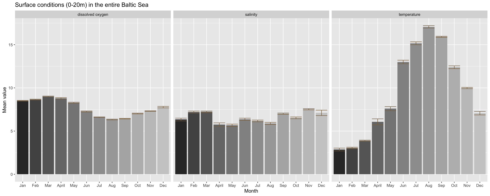 You’ll see that dissolved oxygen conditions decrease slightly towards summer and increase again in autumn. This reflects the increase in the zooplankton stock size over summer and the following phytoplankton autumn peak when zooplankter have decreased in numbers. Salinity does not show strong intra-annual variation but temperature does: it shows a clear seasonal trend typical for temperate regions with a unimodal distribution, peaking in the summer month August and being lowest in January/February. But beware that some of the monthly differences you see are also driven by an overrepresentation of a specific area, e.g. the South in September-November. Temperature is likely to be higher in the South at that time, hence the high temperature values you see in the plot for 9-11 might be much lower for the entire Baltic Sea!
So lets see if this seasonal pattern holds for every region in the Baltic Sea later in 3.1.2.
Bottom water conditions
The only difference to the previous approach on the sea surface conditions is how we extract the values for the bottom layer, which will be described in the following:
# 1st, we filter the shallow stations and then all measurements that are 10m above the bottom
bot_lay <- hydro %>%
filter(depth > 30, pres >= (depth-10)) %>%
# complete.cases returns a logical vector indicating which cases are complete
mutate(comp_case = complete.cases(.$temp, .$sal, .$doxy)) %>%
group_by(cruise, station, date_time, fmonth) %>%
summarise(
temp = mean(temp, na.rm = TRUE),
sal = mean(sal, na.rm = TRUE),
doxy = mean(doxy, na.rm = TRUE),
n = n(),
n_all3 = sum(comp_case)
)
print(bot_lay, n = 5)## # A tibble: 1,537 x 9
## # Groups: cruise, station, date_time [?]
## cruise station date_time fmonth temp sal doxy n
## <chr> <chr> <dttm> <fct> <dbl> <dbl> <dbl> <int>
## 1 ???? 0247 2015-02-17 09:54:00 Feb 4.36 13.2 5.60 3
## 2 ???? 0793 2015-06-12 08:15:00 Jun 6.99 19.0 1.45 5
## 3 ???? 1133 2015-08-03 08:06:00 Aug NaN 19.3 0.880 3
## 4 ???? 1321 2015-08-20 10:37:00 Aug 10.2 10.6 2.96 4
## 5 ???? 1383 2015-08-31 08:21:00 Aug 6.98 19.0 1.25 5
## # ... with 1,532 more rows, and 1 more variable: n_all3 <int>Now we proceed as we did for the surface conditions…
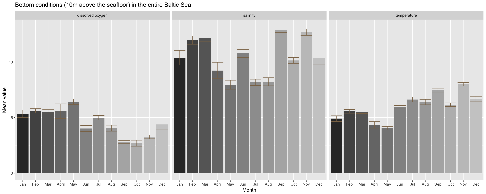
The oxygen condition do not vary so much from the surface condition (slight increase in spring followed by a drop in summer and an increase again towards autumn). But differences in salinity condition are much stronger between months at the bottom, although it does not follow a seasonal trend. The differences here are most probably driven by the irregular sampling design. If you recall, in September and November, sampling took mainly place in the South around the Bornholm basin. The Southern and Western Baltic Sea towards the entrance is more saline, particularly at the bottom. A higher sample size in this region does therefore impact the calculation of an overall salinity mean.
Temperature differs also from the surface condition and shows less the unimodel pattern peaking in summer. Instead, temperature remains at higher levels during autumn. But again, this pattern could be linked to the unbalanced station coverage and it remains the question how the seasonal pattern varies between different areas.
3.1.2 Spatial variation in the seasonal dynamic
Our dataset comprises of coordinates per station but no further regional information such as the ICES subdivisions. In such case one can apply a quick-and-dirty approach by dividing the stations into coarse sub-areas.
# Create a data frame with the sub-areal extents
y1 <- min(hydro$lat)
y2 <- max(hydro$lat)
x1 <- min(hydro$long)
x2 <- max(hydro$long)
areas <- tibble(area = factor(1:4, levels = 1:4,
labels = c("Western BS", "Central BS", "Eastern BS", "Northern BS")),
min_lat = c(y1, y1, 55, 62),
max_lat = c(y2, 62, 62, y2),
min_long = c(x1, 15, 22, x1 ),
max_long = c(15, 22, x2, x2) )There are various ways to assign these areas to each station. You could
- write your own function and then apply it to each row using a function of the
applyfamily or the purrr package (see lecture 17 and 18), - assign to each stations the respective area depending on whether the lat and long coordinates meet the conditions for the aeral extend (applying e.g. nested loops) or
- convert both point data (i.e. the surf_stat data frame with the station coordinates) and the area data frame into a point and polygon simple feature respectively (see the vignette for the sf package and than apply a spatial join.
But since we haven’t covered any of that so far I will show you a simple workaround with the sea surface data:
surf_lay <- hydro %>%
filter(pres <=20) %>%
group_by(cruise, station, date_time, fmonth, lat, long) %>%
summarise(
temp = mean(temp, na.rm = TRUE),
sal = mean(sal, na.rm = TRUE),
doxy = mean(doxy, na.rm = TRUE),
n = n()
) %>% ungroup()
# Apply 4 filter routines, one for each area, add the area column and then row-bind the 4 subsets
wbs <- surf_lay %>%
filter(lat >= areas$min_lat[1] & lat <= areas$max_lat[1],
long >= areas$min_long[1] & long <= areas$max_long[1]) %>%
mutate(area = 1)
cbs <- surf_lay %>%
filter(lat >= areas$min_lat[2] & lat <= areas$max_lat[2],
long > areas$min_long[2] & long <= areas$max_long[2]) %>%
mutate(area = 2)
ebs <- surf_lay %>%
filter(lat >= areas$min_lat[3] & lat <= areas$max_lat[3],
long > areas$min_long[3] & long <= areas$max_long[3]) %>%
mutate(area = 3)
nbs <- surf_lay %>%
filter(lat > areas$min_lat[4] & lat <= areas$max_lat[4],
long >= areas$min_long[4] & long <= areas$max_long[4]) %>%
mutate(area = 4)
# Row-bind the tables
surf_area <- bind_rows(list(wbs,cbs,ebs,nbs)) %>%
mutate(area = factor(area, levels = 1:4,
labels = c("Western BS", "Central BS", "Eastern BS", "Northern BS")))
dim(surf_lay); dim(surf_area)## [1] 2848 10## [1] 2848 11Both tables have the same dimensions indicating that each station got assigned to only one area!
Now we continue with our monthly means per area as we did with the total monthly means (section 3.1a):
# Average over the samplings per station, month, and area
surf_stat <- surf_area %>%
group_by(station, fmonth, area) %>%
summarise(
temp = mean(temp, na.rm = TRUE),
sal = mean(sal, na.rm = TRUE),
doxy = mean(doxy, na.rm = TRUE),
n = n()
)
# Average over all stations per month and area.
surf_month <- surf_stat %>%
group_by(fmonth, area) %>%
summarise(
temp_mean = mean(temp, na.rm = TRUE),
sal_mean = mean(sal, na.rm = TRUE),
doxy_mean = mean(doxy, na.rm = TRUE),
temp_se = se(temp),
sal_se = se(sal),
doxy_se = se(doxy),
n = n()
)
surf_month %>% filter(n < 10) %>% print(n = 20)## # A tibble: 8 x 9
## # Groups: fmonth [5]
## fmonth area temp_mean sal_mean doxy_mean temp_se sal_se doxy_se n
## <fct> <fct> <dbl> <dbl> <dbl> <dbl> <dbl> <dbl> <int>
## 1 Jan Northe… 2.01 4.19 9.22 0.460 0.516 NA 8
## 2 Feb Easter… 0.325 5.85 9.27 NA NA NA 2
## 3 Mar Easter… 1.90 5.01 8.83 0.221 0.478 0.278 7
## 4 Mar Northe… 0.575 3.81 9.63 0.199 0.398 0.0772 7
## 5 Nov Easter… 9.77 5.92 7.28 0.157 0.337 0.109 3
## 6 Nov Northe… 5.66 4.53 8.04 0.370 0.202 0.123 6
## 7 Dec Easter… 7.28 6.22 7.47 NA NA NA 2
## 8 Dec Northe… 3.94 3.25 9.20 0.767 0.592 NA 6The count column n in the surf_month table becomes very useful now as it demonstrates, when filtering for low values, that some areas are not well sampled in certain month, e.g. the Eastern Baltic Sea (representing the Gulf of Finland and the Gulf of Riga) was sampled only twice in February and December.
We apply the same calculation for the bottom conditions (not shown here) and compare the monthly figures:

You can see from this figure that at the surface the seasonal dynamics do not vary greatly between areas. Except the magnitude of the salinity and temperature differs, being generally higher in the South and Western region. In addition, the Western Baltic featured during 2015 also a slightly seasonal pattern with decreasing values towards summer and increasing again thereafter. But this pattern is also quite noisy as indicated by the wide error bars.
This spatial comparison does not support the initial hypothesis raised that some of the monthly differences might be driven by an overrepresentation of a specific area. The high September-November temperature regimes (higher than Jan- May) found for the entire Baltic Sea can be seen in all 4 areas, independent of the sample size.
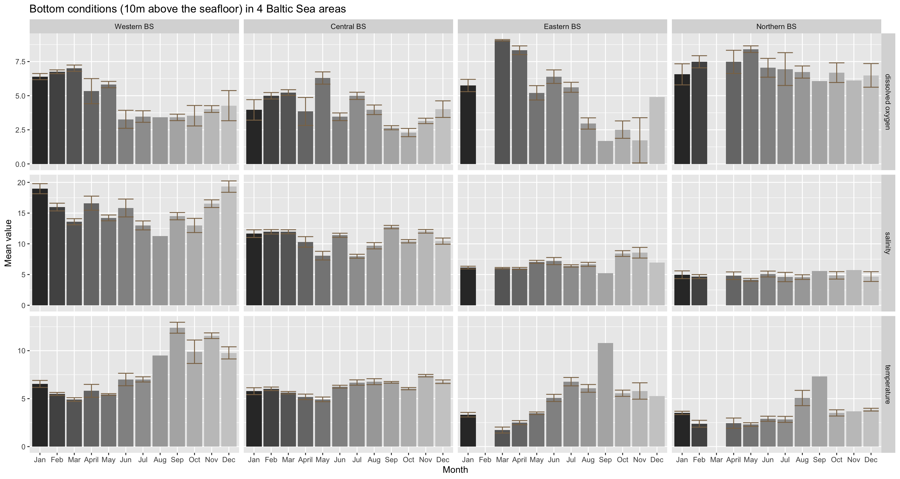
The bottom conditions show a slightly different picture:
Oxygen: The overall seasonal trend in dissolved oxygen conditions, with its peak in May and a drop thereafter, is slightly reflected in all areas except for the Eastern BS. Here oxygen levels are higher earlier in the year and drop already in March. What differs particularly between areas is the magnitude in monthly changes, e.g. the max. difference in the Eastern BS is about 7.4 mg/l and in the Northern BS about 2.4 mg/l.
Salinity: The strong intra-annual variation at the bottom found for the whole study area resembles mainly the dynamics in the Western and Central BS, while the generally lower salinity levels in the Eastern and Northern BS change little during the year. This confirms our previous hypothesis that the unbalanced sampling design has quite a strong impact on the overall pattern. A stratified sampling approach would be very suitable to identify a Baltic-wide seasonal trend in bottom salinity conditions.
Temperature: Temperature is generally low at the beginning of the year and higher during the second half, but this change is least pronounced in the Central BS and strongest in the Western BS. The whole-region monthly comparison reflects fairly well the core dynamic of all 4 areas, although the magnitude in changes in quite area-specific.
To conclude, the Baltic Sea features rather strong seasonal patterns in oxygen and temperature conditions. These are more pronounced at the surface and differ much less between regions.
3.2 Spatial components (horizontally)
3.2.1 Spatial gradient of temperature, salinity, and oxygen conditions across the Baltic Sea?
The code is only shown for the surface conditions:
# Same as for temporal trend: Calculate surface layer mean per station
surf_lay <- hydro %>%
filter(pres <=20) %>%
group_by(cruise, station, date_time, fmonth, lat, long) %>%
summarise(
temp = mean(temp, na.rm = TRUE),
sal = mean(sal, na.rm = TRUE),
doxy = mean(doxy, na.rm = TRUE)
)
# Now calculate mean per station, averaged over all times
surf_stat <- surf_lay %>%
group_by(station, lat, long) %>%
summarise(
temp = mean(temp, na.rm = TRUE),
sal = mean(sal, na.rm = TRUE),
doxy = mean(doxy, na.rm = TRUE)
) There are many ways to visualize the distribution of the parameters. The most simplest way is to plot the stations in the lat-long space and scale the points based on the parameter values:
p_surf <- ggplot(surf_stat, aes(long, lat)) + theme_bw()
p_o <- p_surf + geom_point(aes(colour = doxy)) +
# viridis colour palette:
scale_colour_viridis_c(limits = c(4, 12), na.value = "black") +
ggtitle("surface dissolved oxygen")
p_s <- p_surf + geom_point(aes(colour = sal)) +
scale_colour_gradient2(midpoint = 7.5,
high = "darkblue", mid = "cornsilk3", low = "darkgreen",
na.value = "black", limits = c(0, 15)) +
ggtitle("surface salinity")
p_t <- p_surf + geom_point(aes(colour = temp)) +
scale_colour_gradient2(midpoint = 12.5,
low = "blue", mid = "yellow", high = "red",
na.value = "black", limits = c(0, 25)) +
ggtitle("surface temperature")
gridExtra::grid.arrange(p_o, p_s, p_t, nrow = 1)
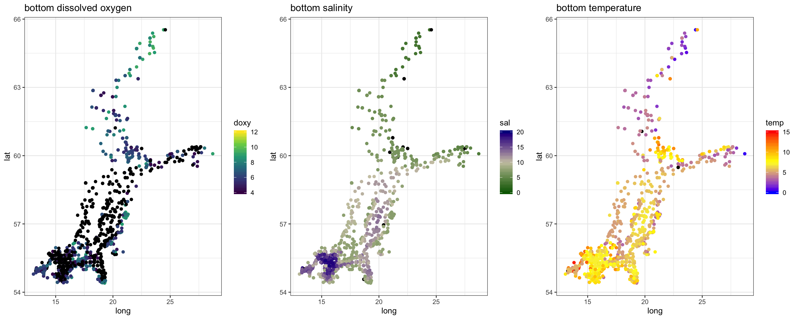
In summary, - oxygen conditions show not a pronounced gradient pattern along the SW-NE axis as temperature and salinity. - salinity changes at the surface more gradually while at the bottom differences in salinity condition are much greater (> 10 psu) and more stepwise, reflecting the topography with its series of basins separated by shallow areas and sills. - temperature is similarly higher in the South-West but varies also substantially at smaller scales. Here, the strong intra-annual variation confounds the overall pattern and splitting the data into monthly subsets is strongly recommended (as we do in the next section).
3.2.2 Seasonal or monthly changes in the spatial pattern of these 3 parameters
Dissolved oxygen conditions
To answer this, we simply need to calculate the stations means per month, keep the month factor in our data and facet our plot. For dissolved oxygen at the surface the code would look like this
# We use the tibble containing the aggregated surface conditions
surf_stat <- surf_lay %>%
group_by(station, lat, long, fmonth) %>%
summarise(
temp = mean(temp, na.rm = TRUE),
sal = mean(sal, na.rm = TRUE),
doxy = mean(doxy, na.rm = TRUE)
)
p_surf <- ggplot(surf_stat, aes(long, lat, group = fmonth)) + theme_bw()
p_surf + geom_point(aes(colour = doxy)) +
scale_colour_viridis_c(limits = c(4, 12), na.value = "black") +
facet_wrap(~fmonth, nrow = 3, ncol = 4) +
ggtitle("Monthly surface conditions")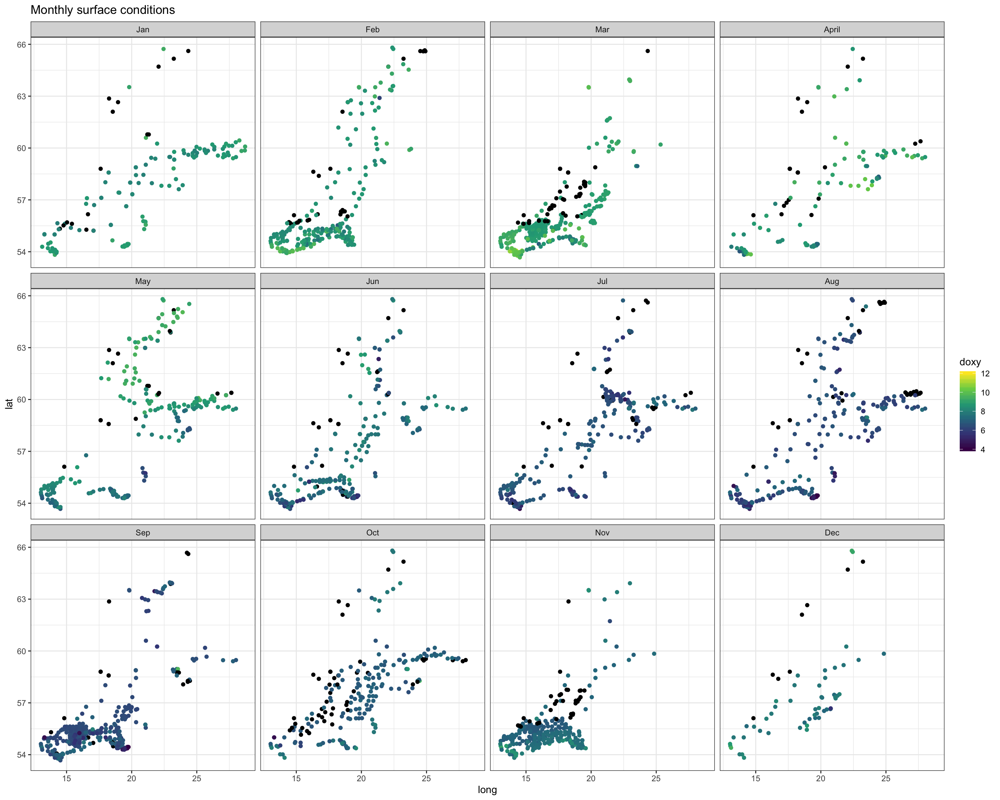

Again, we see the decrease in oxygen over the year, but there are little spatial differences at the bottom or surface in any month, except for May were the decrease started earlier in the South. Note that the sample sizes vary, particularly for the bottom layer and with big spatial gaps (black points = NAs), so any conclusion will be a bit shaky.
Salinity
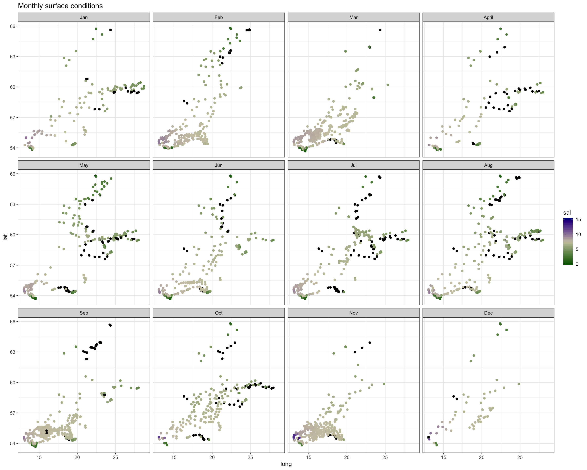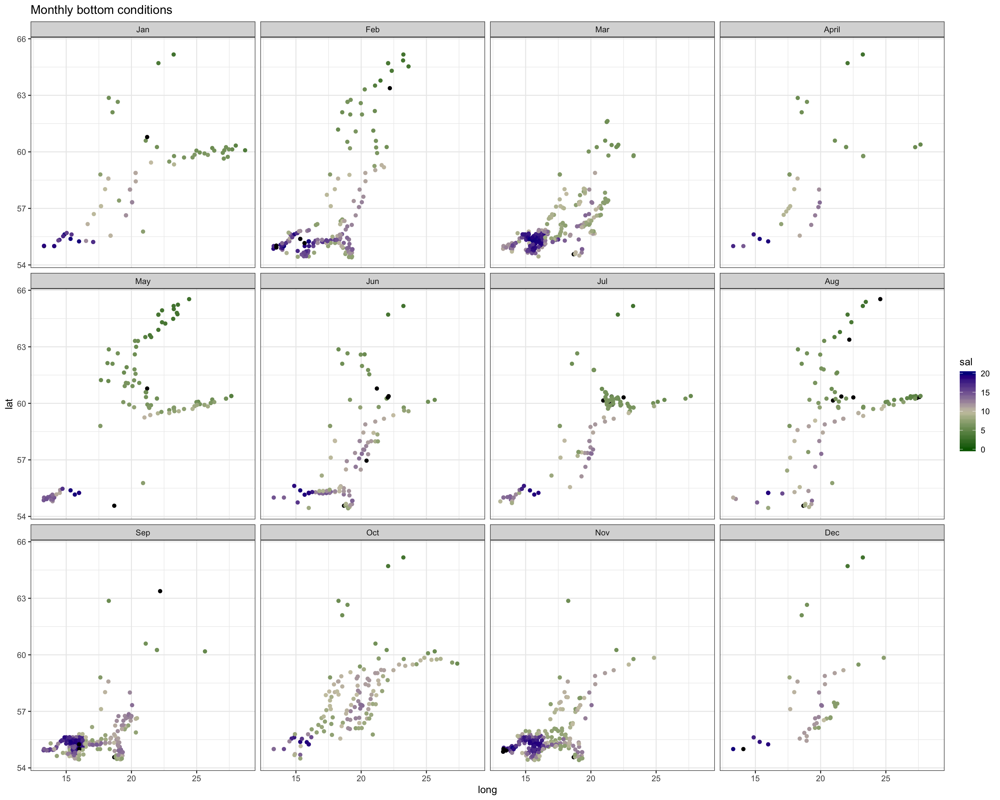
Spatial patterns in surface and bottom salinity conditions seem to be rather constant over the year. In every month you see that salinity is slightly higher offshore and in the Sout-West.
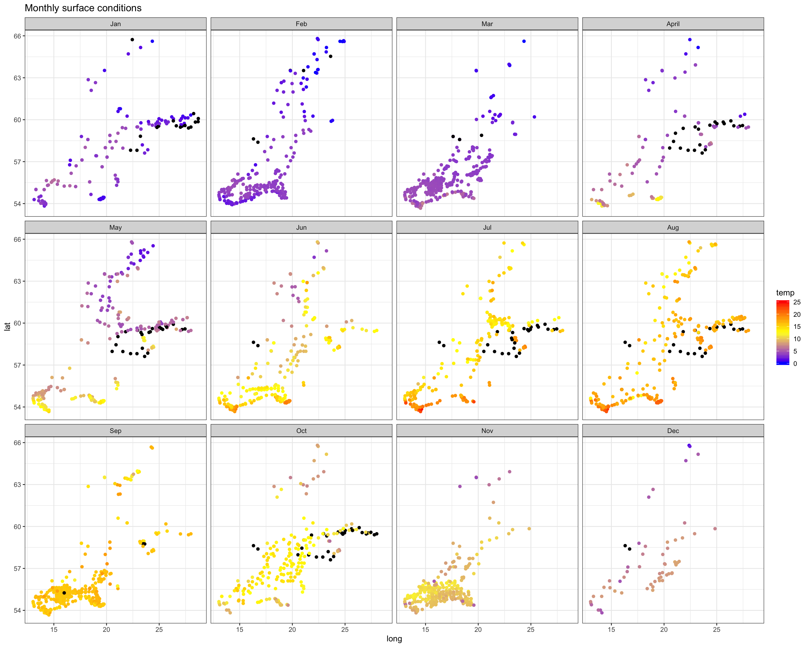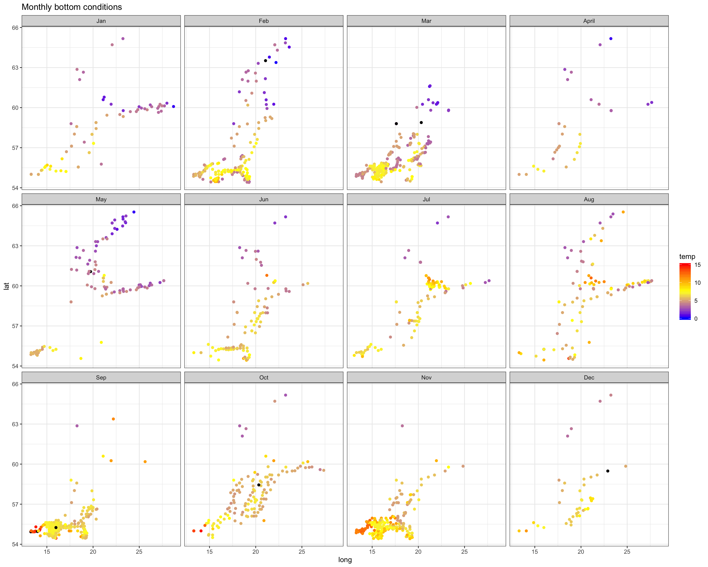
The monthly maps show you that - the sea surface temperature is generally higher in the South-West. - Throughout the Baltic Sea temperature increases towards summer with highest values in August. - The onset of the increase differs in space: in the SW it started already in April, in the North 2 months later (in June). - Due to the phase shift in seasonality the Baltic Sea features a stronger gradient in spring.
3.2.3 If there is a gradient, is it a continuous one or can you define certain areas that are similar?
The surface conditions seem to change more continuously than the bottom conditions in the above plots, which is not surprising as the bottom has a distinct topology with deep basings separated by sills hindering a constant waterflow unlike at the surface.
On the other hand, a lack of a specific pattern might also be caused by the type of visualization. Scatter plots with overlaying points and gaps scattered irregular in space are not ideal. Interpolating the points and visualizing it as contour or surface plot could be helpful. But be aware that some of the patterns you can see in interpolated plots are purely an artefact of missing values!
Lets look at the surface condition in May and bottom condition in February (chosen because of more or less even spatial coverage and higher spatial differences in the 3 params). Various different packages offer some functions for spatial interpolations and you should think seriously which interpolation methods to use. I will demonstrate here the inverse distance weighted interpolation (IDW) from the gstatpackage and later for the depth profile the Multilevel B-spline Approximation (MBA) approach. But of course, you can try the MBA also here or any other interpolation method.
# Load required geo packages
library(gstat)
library(sp)
surf_may_doxy <- surf_stat %>%
filter(fmonth == "Jun", !is.na(doxy))
# get spatial extent of sampling stations for interpolation
dat <- surf_may_doxy
dat$x <- dat$long
dat$y <- dat$lat
x_min <- min(dat$x, na.rm = T) - min(dat$x, na.rm = T)/100
x_max <- max(dat$x, na.rm = T) + max(dat$x, na.rm = T)/100
y_min <- min(dat$y, na.rm = T) - min(dat$y, na.rm = T)/100
y_max <- max(dat$y, na.rm = T) + max(dat$y, na.rm = T)/100
# expand points to grid
grd <- expand.grid(
x = seq(from = x_min, to = x_max, by = .1),
y = seq(from = y_min, to = y_max, by = .1))
coordinates(grd) <- ~x + y
gridded(grd) <- TRUE
# The following converts dat into a SpatialPointsDataFrame object (sp package)
# needed for the idw function
coordinates(dat) = ~x + y
### Interpolate surface and fix the output:
idw_mod <- idw(formula = doxy ~ 1, locations = dat,
newdata = grd) # apply idw model for the data## [inverse distance weighted interpolation]idw_mod <- as.data.frame(idw_mod)
# Now the map
world <- map_data("world")
p_surf_oxy <- ggplot() + geom_tile(data = idw_mod, aes(x,y,
fill = round(var1.pred, 0))) +
scale_fill_viridis_c(limits = c(4, 12)) +
geom_point(data = surf_may_doxy, aes(x = long, y = lat), shape = 21,
colour = "grey80", alpha = 0.4) +
geom_polygon(data = world, aes(x = long, y = lat, group = group),
fill = "white", colour = "black") +
coord_map("ortho", xlim = c(12, 28), ylim = c(54,66)) +
labs(fill = "doxy",
title = "Interpolated surface conditions in June") +
theme_bw() +
theme(panel.grid = element_blank())
#p_surf_oxy
3.3 Spatial components (vertically)
Can you identify a water stratification in terms of temperature, salinity, and oxygen conditions? For which parameters, which months and which areas?
Approach 1
One way could be to choose single stations and plot all 3 parameters together to visualize the stratification at a specific point in space and time.
# Select here one station
dat <- hydro %>% filter(station == "0040", cruise == "06MT")
ggplot(dat, aes(x=pres)) +
geom_line(aes(y = temp), colour = "darkorange1") +
geom_line(aes(y = sal), colour = "cadetblue4") +
geom_line(aes(y = doxy+10), colour = "darkorchid4") +
scale_y_continuous(sec.axis = sec_axis(~.-10, name = "Diss oxygen conc. (mg/l)")) +
scale_x_reverse() +
ylab("Temperature (°C) & Salinity (psu)") + xlab("Depth") +
coord_flip()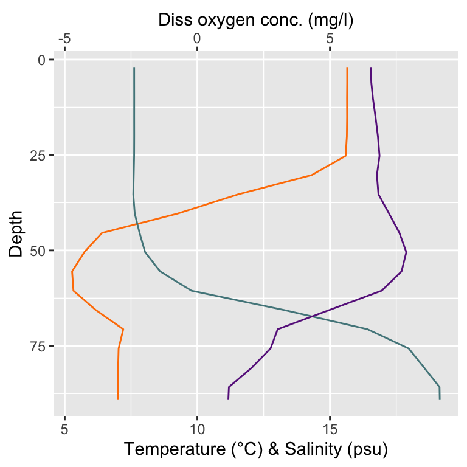
Approach 2
We plot the depth profile of a single parameter but for all stations to identify spatial differences.
hydro %>% filter(depth > 30) %>%
unite(station, date_time, col = "id", sep = "/") %>%
ggplot(aes(x=pres, group = id)) +
geom_point(aes(y = sal), colour = "cadetblue4", alpha = .2) +
geom_line(aes(y = sal), colour = "cadetblue4", alpha = .2) +
scale_x_reverse() +
coord_flip()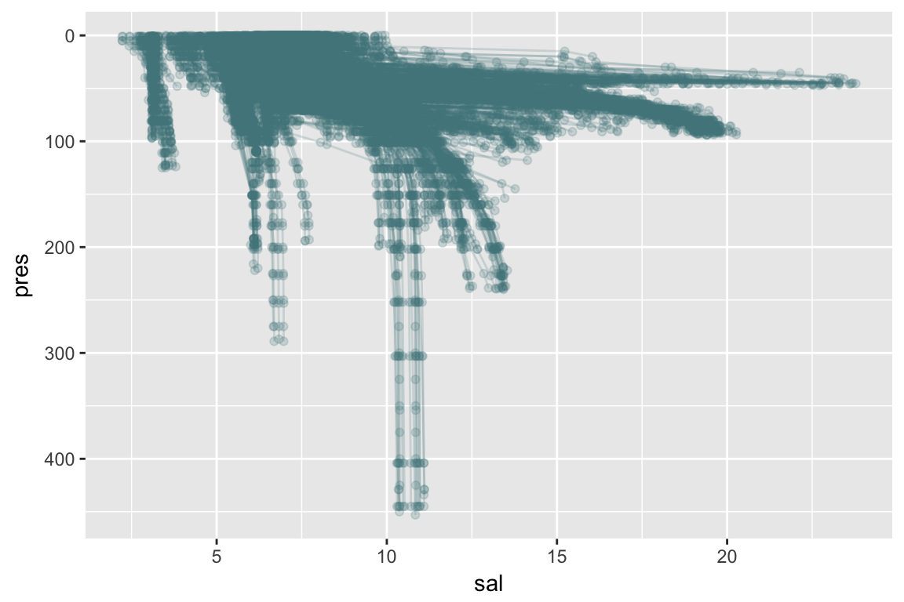
Approach 3
We add the areas to the complete dataset and split the previous salinity plot by area.
wbs <- hydro %>%
filter(lat >= areas$min_lat[1] & lat <= areas$max_lat[1],
long >= areas$min_long[1] & long <= areas$max_long[1]) %>%
mutate(area = 1)
cbs <- hydro %>%
filter(lat >= areas$min_lat[2] & lat <= areas$max_lat[2],
long > areas$min_long[2] & long <= areas$max_long[2]) %>%
mutate(area = 2)
ebs <- hydro %>%
filter(lat >= areas$min_lat[3] & lat <= areas$max_lat[3],
long > areas$min_long[3] & long <= areas$max_long[3]) %>%
mutate(area = 3)
nbs <- hydro %>%
filter(lat > areas$min_lat[4] & lat <= areas$max_lat[4],
long >= areas$min_long[4] & long <= areas$max_long[4]) %>%
mutate(area = 4)
# Row-bind the tables
hydro_area <- bind_rows(list(wbs,cbs,ebs,nbs)) %>%
mutate(area = factor(area, levels = 1:4,
labels = c("Western BS", "Central BS", "Eastern BS", "Northern BS")))
hydro_area %>% filter(depth > 30) %>%
unite(station, date_time, col = "id", sep = "/") %>%
ggplot(aes(x=pres, group = id)) +
geom_point(aes(y = sal), colour = "cadetblue4", alpha = .2) +
geom_line(aes(y = sal), colour = "cadetblue4", alpha = .2) +
coord_flip() +
scale_x_reverse(limits =c(150,0)) +
facet_grid(.~area, scales = "free") 
Approach 4
We add the areas to the complete dataset and than aggregate over all values per depth level (we use 1m depth) for each month and area. We then facet over all months and parameters and add a horizontal line at 50m depth to help identify spatio-temporal stratification patterns in oxygen, salinity and temperature.
# Round the pressure values to full integers for the aggregation
hydro_area$pres <- round(hydro_area$pres, 0)
hydro_area %>% filter(depth > 30) %>%
group_by(fmonth, area, pres) %>%
summarise(
temp = mean(temp, na.rm = TRUE),
sal = mean(sal, na.rm = TRUE),
doxy = mean(doxy, na.rm = TRUE)
) %>%
# For facetting over parameters data needs to be long
gather(-(fmonth:pres),key = "param", value = "mean") %>%
mutate(param = case_when(
param == "temp" ~ "temperature",
param == "sal" ~ "salinity",
param == "doxy" ~ "dissolved oxygen"
)) %>%
ggplot(aes(x=pres)) +
scale_x_reverse(limits =c(150,0)) +
geom_vline(xintercept = 50, colour = "grey20") +
geom_point(aes(y = mean, colour = area)) +
ylab("Temperature (°C)") + xlab("Depth") +
coord_flip() +
facet_grid(fmonth ~ param, scales = "free") +
scale_colour_brewer(palette = "Set1") +
theme_bw() 
3.4 Comparison with findings of Rak (2016)
If you select only stations that are close to the transect described in the paper figure 1 (i.e. stations around 55°N and between 15° and 19°E), do you find a similar vertical distribution of temperature, salinity, and oxygen for February than Rak (2016):
rak <- hydro %>%
filter(fmonth %in% c("Feb"), depth > 30,
between(lat, 55.2, 55.4), between(long, 13, 19.5) ) %>%
group_by(long, pres) %>%
summarise(
temp = mean(temp, na.rm = TRUE),
sal = mean(sal, na.rm = TRUE),
doxy = mean(doxy, na.rm = TRUE),
depth = mean(depth, na.rm = TRUE),
n = n()
)
theme_opt <- theme_bw() + theme(panel.grid = element_blank())
rak_t <- rak %>% filter(!is.na(doxy)) %>% ungroup()
p_t <- ggplot(rak_t, aes(x = long)) +
geom_point(aes(y = pres, colour = temp)) +
scale_colour_gradient2(midpoint = 6.5,
high = "red", mid = "yellow", low = "blue",
limits = c(3, 10)) +
scale_y_reverse(limits =c(100,0)) +
theme_opt
rak_s <- rak %>% filter(!is.na(doxy)) %>% ungroup()
p_s <- ggplot(rak_s, aes(x = long)) +
geom_point(aes(y = pres, colour = sal)) +
scale_colour_gradient2(midpoint = 15,
high = "darkblue", mid = "yellow", low = "darkgreen",
limits = c(5, 25)) +
scale_y_reverse(limits =c(100,0)) +
theme_opt
rak_o <- rak %>% filter(!is.na(doxy)) %>% ungroup()
p_o <- ggplot(rak_o, aes(x = long)) +
geom_point(aes(y = pres, colour = doxy)) +
scale_colour_viridis_c(limits = c(0, 10)) +
scale_y_reverse(limits =c(100,0)) +
theme_opt
gridExtra::grid.arrange(p_t, p_s, p_o, nrow = 3)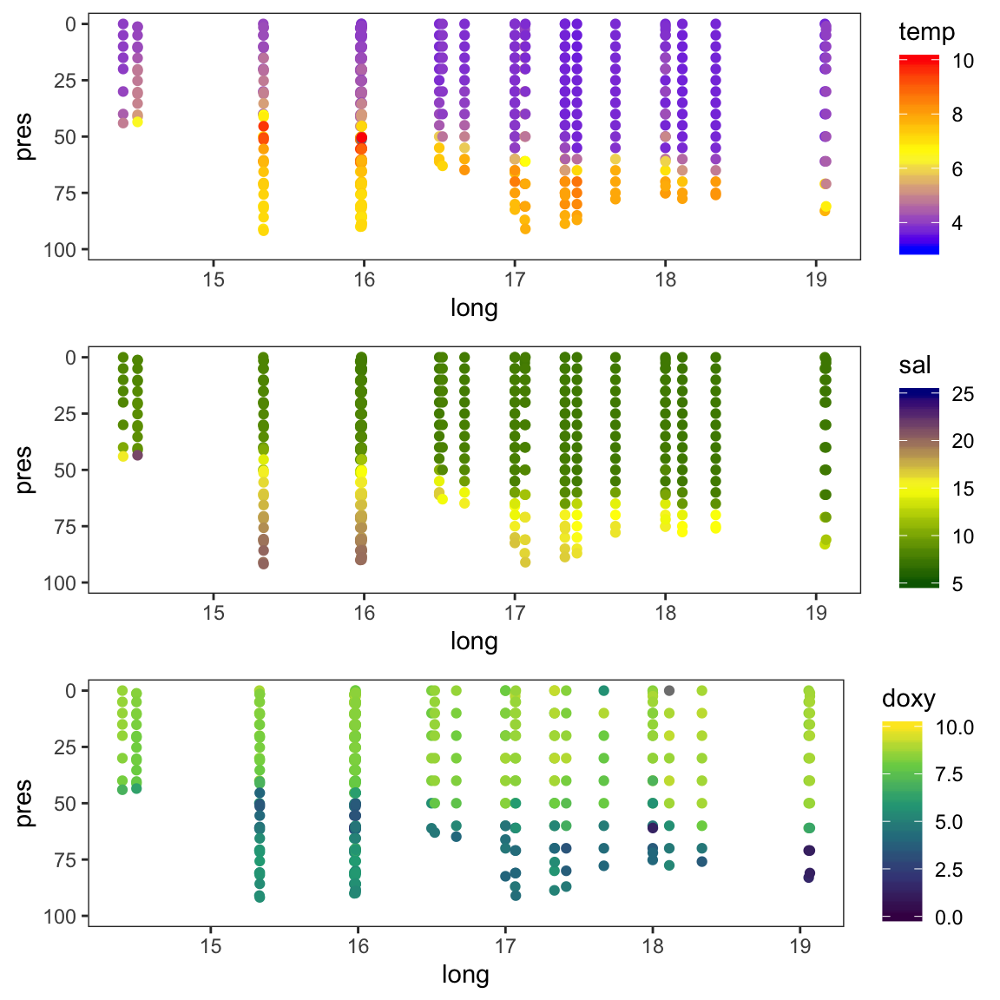
The data points do not go all down to 100m as the bottom depths changes along the transect. To add the seafloor to the plot use the geom geom_ribbon, which is an area plot defined by ymin and ymax along the x axis. As ymin we can use the 100m depth and as ymax the bottom depth of each sampled station:
# We use the full rak df for the seafloor estimation
bottom <- rak %>%
select(long, depth) %>%
distinct() %>%
ungroup()
# Add the geom_ribbon with the bottom df simply to the previous plots
# (that is possible since the y aesthetic was not defined in ggplot() but in
# geom_point() )
p_t2 <- p_t + geom_ribbon(data = bottom, aes(ymin = depth,
ymax = rep(100, length(depth))), fill = "grey70")
p_s2 <- p_s + geom_ribbon(data = bottom, aes(ymin = depth,
ymax = rep(100, length(depth))), fill = "grey70")
p_o2 <- p_o + geom_ribbon(data = bottom, aes(ymin = depth,
ymax = rep(100, length(depth))), fill = "grey70")
gridExtra::grid.arrange(p_t2, p_s2, p_o2, nrow = 3)
Nice, but 3 things could be improved:
- Get rid of the peaks in the bottom line → by smoothen the depth values
- Get rid of the white margin → by adding
coord_cartesian(expand = FALSE) - Create a surface plot similar to the one in the Rak paper.
For the smoothing we can use a simple interpolation function from the stats package that returns a list of points, which linearly interpolate given a set of data points:
# Calculate bottom values using linear interpolation
bottom_smooth <- approx(bottom$long, bottom$depth, n = length(bottom$depth))
# (n must be the same value as interp()'s nx )
# Convert list into a data frame
bottom_smooth <- do.call(cbind.data.frame, bottom_smooth)
names(bottom_smooth) <- c("long", "depth")
p_t2 <- p_t + geom_ribbon(data = bottom_smooth, aes(ymin = depth,
ymax = rep(100, length(depth))), fill = "grey70") +
coord_cartesian(expand = FALSE)
p_s2 <- p_s + geom_ribbon(data = bottom_smooth, aes(ymin = depth,
ymax = rep(100, length(depth))), fill = "grey70") +
coord_cartesian(expand = FALSE)
p_o2 <- p_o + geom_ribbon(data = bottom_smooth, aes(ymin = depth,
ymax = rep(100, length(depth))), fill = "grey70") +
coord_cartesian(expand = FALSE)
gridExtra::grid.arrange(p_t2, p_s2, p_o2, nrow = 3)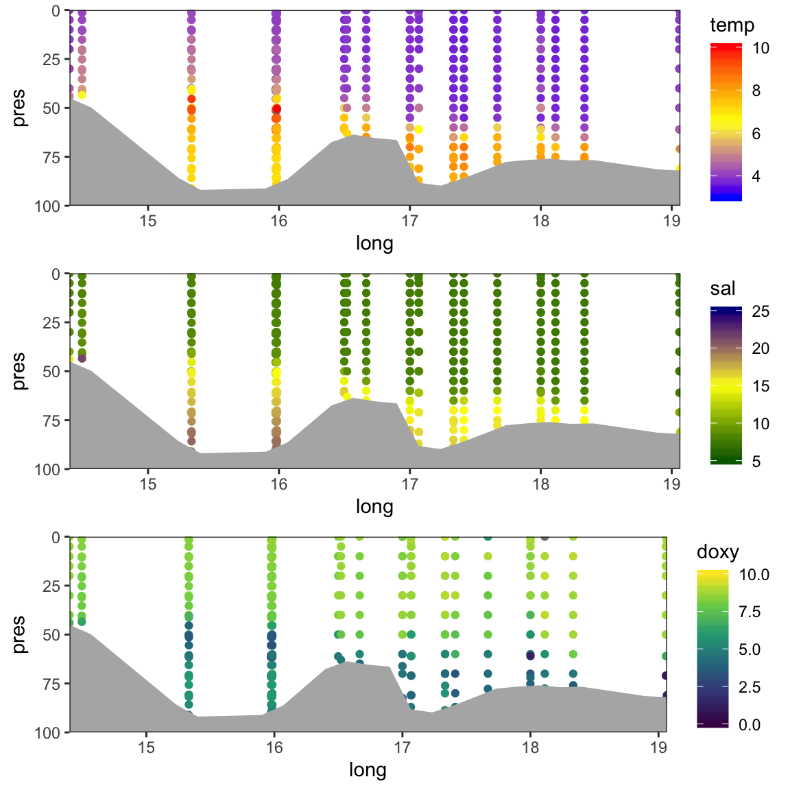
The function mba.surf() from the MBA package is a useful interpolation method, which is similar to the interpolation in the free software Ocean Data View (ODV). The input is a matrix or dataframe with 3 columns: x, y, and z (here long, pres (as depth), and e.g. temp), and the number of points along x and y. If the x and y numbers are not even, it is suggested to set the sp argument to FALSE, so that the resulting surface is returned as a SpatialPixelsDataFrame object instead of a x*y matrix containing the interpolated z values. In any case, I recommend you set sp = FALSE because the x*y matrix contains, in fact, y as rows and x as columns so one can easily mess up the results when bringing the data into a tidy format for ggplot. Also, one can easily create a dataframe in the long format by simply extracting the 3 columns from the spatial object.
mba.surf() returns a list with the first sublist $xyz.est being the SpatialPixelsDataFrame object where we need to extract x,y, and z from. This class contains so-called slots with the coordinates, projection, bounding box, attribute data, etc. To access the different slots you have to use the @ symbol.
For comparability with the figure 5 in Rak (2016) we will use the same color scheme for all 3 plots. The required code is demonstrated for temp:
library(MBA)
rak_mba <- rak_t %>%
select(long, pres, temp) %>%
mba.surf(no.X = 300, no.Y = 300, extend = T, sp = TRUE)
interp_t <- data.frame(rak_mba$xyz.est@coords, rak_mba$xyz.est@data)
names(interp_t) <- c("long", "depth", "temp")
p_t <- ggplot(interp_t, aes(long, depth)) +
geom_raster(aes(fill = temp)) +
geom_contour(aes(z = temp), bins = 6, colour = "black", alpha = 0.5) +
scale_fill_gradient2(midpoint = 6.75, limits = c(3.5, 10),
high = "red", mid = "yellow", low = "blue") +
# the depth ribbon has to come last to overlay the interpolation
geom_ribbon(data = bottom_smooth, aes(x = long, ymin = depth,
ymax = rep(100, length(depth))), fill = "grey50") +
scale_y_reverse(limits =c(100,0)) +
labs(y = "Depth (m)", x = "Longitude") +
coord_cartesian(expand = FALSE) +
theme_opt
Similarities and differences:
- We find the same temperature gradient of 4-10°C from the bottom to the surface with peak values around the halocline (i.e. a vertical zone in the water column in which salinity changes rapidly with depth) in the Bornholm Basin.
- The vertical salinity distribution is similar in both datasets but overall slightly higher in the hydro dataset.
- The oxygen values in the
hydrodataset are overall lower and show less small-scale variation. This could be partly due to the choice of the interplation method.